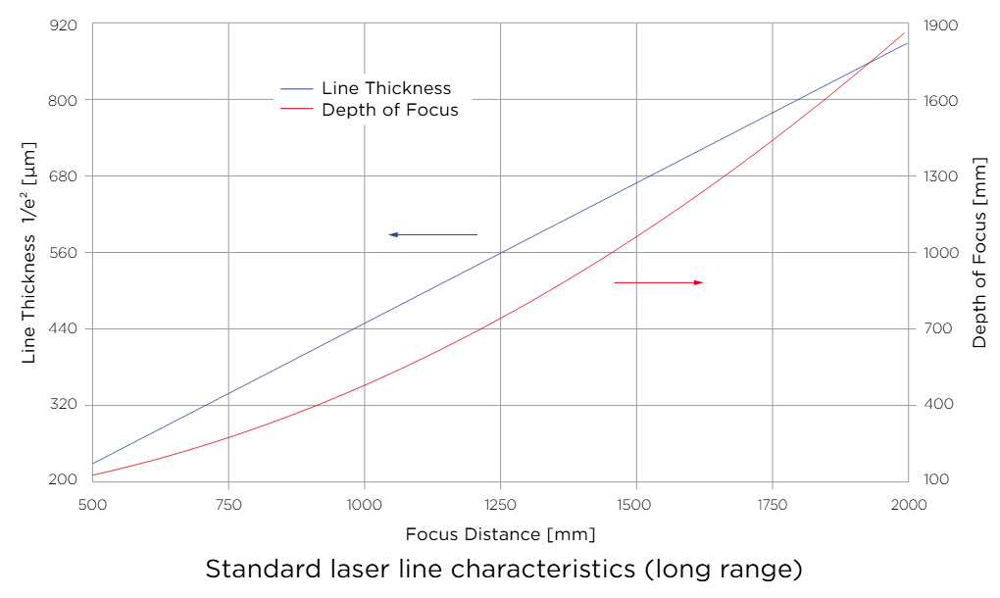

A COMPACT AND FLEXIBLE LASER MODULE SUITABLE AS STAND-ALONE SOLUTION OR FOR INTEGRATION
MVnano line lasers have a diameter of 11.5 mm and are 54 mm long. They are therefore suitable as a stand-alone solution with a camera for 3D triangulation or for integration in intelligent 3D vision sensors. They provide great flexibility with various wavelengths (405 – 850 nm), output powers up to 100 mW, fixed as well as adjustable focus and different versions of modulation, e.g. 24 V.
The MVnano with new focus mechanics (Edition 2025) offers improved dust- and moisture-proofness, an even shorter design and an improved beam drift while focusing the laser. The established, easy focusing method remains untouched.
A variety of optics options provides the right combination of line thickness and depth of focus for various applications. Different housing versions are available, e.g. 2H (separate housing for optics and electronics).
FEATURES
Superior line quality for a variety of wavelengths
Fixed and adjustable focus available
Improved focus mechanics for the adjustable focus
Many optics options for the right match of line thickness and depth of focus
Housed in a compact 11.5 × 54 mm package, the MVnano can be used as a stand-alone unit or integrated as a cost-optimised laser module into a wide range of applications.
FLEXPOINT® MVnano line laser
The FLEXPOINT® MVnano line laser is the standard laser for industrial machine vision. With a length of 54 mm and a diameter of 11.5 mm, it is ideally suited as a stand-alone product or for space-saving integration into sensors or 3D scanners.
For the 2025 Edition, the focusing mechanism was fundamentally redesigned. As a result, the modules are reliably protected against dust, splash water and the ingress of moisture. At the same time, beam deviation during focusing has been reduced to a minimum.
Homogeneous power distribution and perfect line quality
Thanks to the high-precision Powell lens from our own production, the line lasers of the FLEXPOINT® MVnano series offer excellent, homogeneous line quality across a wide range of wavelengths.
Several optics are available, providing the optimum ratio between line thickness and depth of focus for every application.
1mW-100mW
Output power
4,5-30V
Operating voltage
< 200mA
Current consumption
<0.25nm/K
Wavelength stability
IP67 Rating
Housing
Spectral range
405nm450nm520nm640nm660nm685nm785nm830nm845nm(other wavelengths on request)
4,5-30V (10-30V for 405/450/520nm); (405/450/520nm available with 5V electronics on request) | no electronics for optical heads
Current consumption
< 200mA (supply current)
Operating temperature
-10° to +50°C (case temperature, depending on wavelength and heat sink)
Storage temperature
-20°C to +60°C (depends on wavelength)
Modulation
digital (high/low active 0-5V, < 20kHz; on request: 0-24V, higher freq.), analog (high/low active by control wire 0-5V, see technical note)
Power stability
≤5% at 25°C (after warm up, only for modules with driver electronics)
Wavelength stability
<0.25nm/K
Spectral range
Output power [mW]
Visualisation of “Spectral range” · (other wavelengths on request)
Date24.03.2026Rev0
www.blauoptoelektronik.de
page 3 of 11
Datasheet
FP-MVnano-25
02
Beam properties
Beam profile
laser line with uniform power distribution (thin lines, TS versions and FOV correction available)
Focus distance
adjustable by pin tool (see instruction manual for details) | factory focused for FIX versions
Boresight deviation
≤10 mrad (≤3 or 5mrad as option)
Pointing stability
≤10μrad/K (improved pointing stability available on request)
Fan angle
1°, 5°, 10°, 15°, 20°, 30°, 45°, 60°, 75°, 90°
Line thickness
STD, DL, DLE, DLSE, TS1, TS2
Line intensity variation
±20% (opt. ± 10%) related to average power (within 80% of the line)
Line straightness
±0,1% ( ±0,05 as option)
Line intensity variation
Schematic · not to scale
Line thickness
STDDLDLEDLSETS1TS2
Line straightness
±0,1% ( ±0,05 as option)
Date24.03.2026Rev0
www.blauoptoelektronik.de
page 4 of 11
Datasheet
FP-MVnano-25
03
Focus options
Line Thickness and Depth of Focus (DOF) for Standard (STD) Focus Option at 660 nm

MVnano is available with different focus options to achieve the right combination of line thickness and depth of focus depending on the application.
The values shown in the table below are the factors which should be used in combination with the graph above.
Pout and λ
Focus options (conversion factor related to reference laser marked in red left side - optimized for thin line / right side - optimized for high DOF)
λ
P_out
Δλ
DLSE
DLE
DL
STD
TS1
TS2
[nm]
[mW]
[nm]
LT
DOF
LT
DOF
LT
DOF
LT
DOF
LT
DOF
LT
DOF
Footnote / Abbreviations
DLSE = Thin Line Super Enhanced · DLE = Thin Line Enhanced · DL = Thin Line · STD = Standard, good compromise for Line Thickness and Depth of Focus · LT = Line Thickness · DOF = Depth of Focus · TS1 = Enhanced Depth of Focus · TS2 = Enhanced Depth of Focus, higher factor
Date24.03.2026Rev0
www.blauoptoelektronik.de
page 5 of 11
Datasheet
FP-MVnano-25
Focusing range [mm]
50 – 5000
Focus
Fixed focus (fixed at factory to defined working distance) or adjustable focus
Line thickness
DLSEThin Line Super Enhanced
DLEThin Line Enhanced
DLThin Line
STDStandard, good compromise for Line Thickness and Depth of Focus
TS1Enhanced Depth of Focus
TS2Enhanced Depth of Focus, higher factor
left side - optimized for thin lineright side - optimized for high DOF
04
Modulation options
The standard module comes without modulation and power adjustment.
Digital Modulation < 20 kHz active high and active low available 0 / 5 V 24 V version available (0 / 24 V)
Analog Modulation high/low by control wire 0 – 5 V
M active low
MI active high
D active low
DI active high
Delay + Rise time (max.) [μs]
10
10
On [V]
0 – 0.5
4.5 – 5
0
5
Off [V]
4.5 – 5
0 – 0.5
5
0
Linear range [V]
> 3
> 3
Date24.03.2026Rev0
www.blauoptoelektronik.de
page 6 of 11
Datasheet
FP-MVnano-25
04
Modulation options
Combinations
Available combinations of options M and D are listed in the table below. For the combined modulations (last four columns), the properties of the modulation components apply according to the columns of M, MI, D and DI. The standard module comes without modulation and power adjustment.
Pout and λ
Modulation options
λ
Pout
Uoper
M
MI
D
DI
MD
MID
MDI
MIDI
[nm]
[mW]
[V]
Footnote / Abbreviations
= Standard availability= Available with modification
a = On@float (if the modulation cable or pin is not connected the module is on (cable is loose))
b = Off@float (if the modulation cable or pin is not connected the module is off (cable is loose))
c = Non-linear response (the curve in the diagram for D and DI indicates an ideal line / linear behaviour but in reality the response is not linear)
d = No Off (module is always glowing / always on at least with very low intensity)
e = TTL (TTL Logic: TTL 5 V has two threshold values - 0.8 V and 2.0 V)
Ø=11,5 × Length (see product map for length → depending on chosen features)
Pin definition
Brown: +VDC, Blue: GND, Black: modulation 3 core cable, 2 m length, wires tin-coated at ends | no wires for optical heads | 150mm cable between housings for 2H versions
Laser class
IEC 60825-1:2014, EN 60825-1:2014+A11:2021
Pin definition
schematic · not to scale
Additional information
Shock tolerance
30 G, 6 ms 75 G, 4 ms
Housing
Standard, 2H (separate housing for optics and electronics) or OH (without electronics) Fixed focus (fixed at factory to defined working distance) or adjustable focus
Accessories available(optional, order separately)
Mount; Mobile power pack for modules ≥ 640 nm; Power supply for 5 V (≥ 640 nm); Power supply for 12 V
Output power: The output power is defined behind optics which means at the beam exit of the laser module
5 V Option available (»StepUp« electronics 4.5 – 6 V) for 405 nm, 450 nm and 520 nm, no standard product but available on request
Below 0 °C condensate formation must be avoided (due to optical and electronic components)
Fan angle: Defined by the ends of the laser line using FWHM based on the average power (within 80 % of line)
Line intensity variation and line straightness are measured at 80 % of the fan angle
Date24.03.2026Rev0
www.blauoptoelektronik.de
page 8 of 11
Datasheet
FP-MVnano-25
06
Technical drawing
MVnano ST-F
MVnano 2025 standard housing, focusable (ST-F)
Units: mm54 ±1
MVnano 2H-F
MVnano 2025 with 2 housings, focusable (2H-F)
Units: mm29 ±1 · 38 ±1
Date24.03.2026Rev0
www.blauoptoelektronik.de
page 9 of 11
Datasheet
FP-MVnano-25
MVnano ST-FIX
MVnano 2025 standard housing, fixed focus (ST-FIX)
Units: mm60 ±1
1For optimal heat dissipation in a mount, we recommend to apply thermal paste on the surface overlap. Units: mm
Housing options
FP-MVnano-25-STStandard housing option in which optics and electronics are accommodated together in a single housing (Standard, ST).
FP-MVnano-25-OHHousing with optics but without electronics (Optical Head, OH).
FP-MVnano-25-2HIn this housing option, optics and electronics are each accommodated in a separate housing (2 Housing, 2H).
Date24.03.2026Rev0
www.blauoptoelektronik.de
page 10 of 11
Datasheet
FP-MVnano-25
07
Ordering code
FP-MVnano-25
Housing
X
ST
2H
OH
Wavelength [nm]
X
405
450
520
640
660
685
785
830
845
Output Power [mW]
X
1 – 100
1 – 75
1 – 80
1 – 100
1 – 100
1 – 40
1 – 100
1 – 80
1 – 40
Modulation / Power Adjustment
X
M | Digital Modulation, active low
MI | Digital Modulation inverted, active high
D | Dimmable, active low
DI | Dimmable inverted, active high
Fan Angle [°]
X
1
5
10
15
20
30
45
60
75
90
Focus [mm]
X
F | Focusable
FYYY | Prefocused to YYY mm, but still focusable
FIXYYY | Fixed focus to YYY mm
Optics
X
STD
DL
DLE
DLSE
TS1
TS2
Example: FP-MVnano-25-ST-785-50M-30-F-DL
Not all combinations which can be created by the ordering code above are possible. For the output power please refer to the table on page 3 (possible combinations of wavelength and output power) and for modulation refer to the table on page 7. Please contact us for any additional combinations you may require.